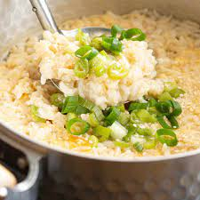

Rice Soup

Description
There are many variations of this soup, and we love the adaptability of the dish depending on what you have on hand. We’ve provided the basic rice soup recipe today, along with a number of vegetable and topping options to make it as light or hearty as you like.
Ingredients
These are the simple ingredients you'll need for this Rice Soup recipe:
- Dashi Stock
- Cooked Sushi Rice
- Soy Sauce
- Egg
- Spring Onion / Green Onion
Steps
Here's a brief overview of what you can expect when you make this easy Rice Soup:
- Pour dashi stock into a donabe pot or medium saucepan and boil over high heat for 3-5 minutes.
- Add the sushi rice and soy sauce, stir through. Reduce heat to a simmer, place the lid on and cook for 3 minutes.
- Pour in the whisked egg and stir through the rice to mix through slightly.
- Add the chopped spring onion on top and place the lid back on. Switch off the heat and allow to sit for 2 minutes or until the egg is cooked to your liking.1 egg, 2 spring onion / green onion
- Serve and enjoy! Optional: Garnish with white sesame seeds.